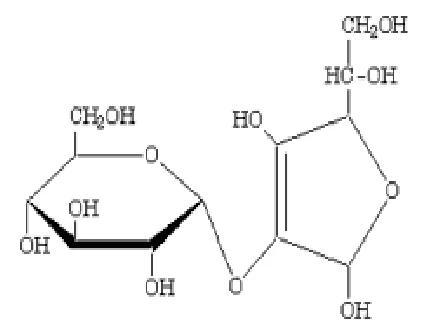
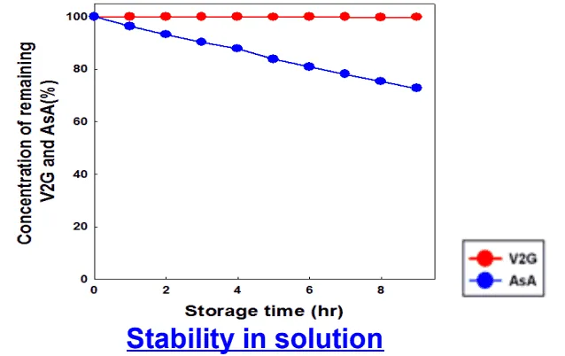
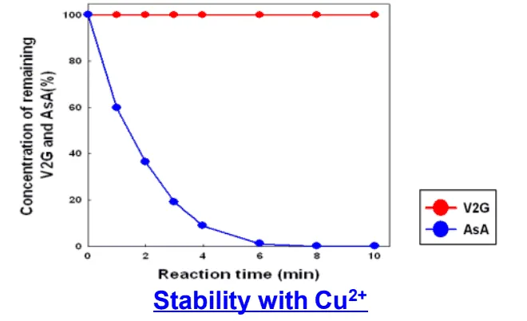
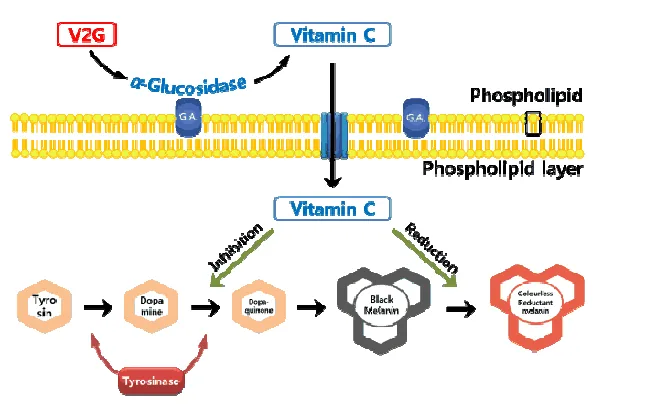

HOME
HOME- 원료소개
- 화장품원료
- V2G
Ingredient research
V2G
Ascorbyl Glucoside
안정화된 비타민 C 유도체
01 / Overview & Strengths
개요 & 특장점
- V2G(Ascorbyl Glucoside)는 식약처 고시 미백 원료이며 안정화된 Vitamin C 유도체입니다.
- 일반 Vitamin C 유도체보다 안정성이 뛰어나며, 일본 Quasi-Drug Standard에 맞춘 원료입니다.
※ 자세한 자료는 직접 문의 부탁드립니다.
Product features / Product Strengths
- 주름개선 효과
- 미백 효과
- 항산화 효과
- 피부탄력 개선효과
02 / Technical Information
기술 자료
원료 기본 규격 및 제품 카탈로그
- INCI Name
- Ascorbyl Glucoside
- CAS No.
- 129499-78-1
- M.O.Q.
- 5KG
- Pack Size
- 5KG
- Appearance
- Powder
- Dosage
- 2%
원료 기본 규격 및 제품 카탈로그
- INCI Name
- Ascorbyl Glucoside
- CAS No.
- 129499-78-1
- M.O.Q.
- 5KG
- Pack Size
- 5KG
- Appearance
- Powder
- Dosage
- 2%
03 / Research Data
기타 데이터
Introduction
- V2G는 비타민 C의 C-2 수산기에 포도당 한 분자가 결합한 결합체입니다. C-2 수산기는 천연 비타민 C가 분해되는 주요 부위입니다.
- V2G는 미생물에서 얻은 효소(Glycosyltransferase)로 전분의 포도당 분자를 비타민 C에 옮겨 붙여 제조합니다.

Characteristic 2 : High Stability — 일반 비타민 C(AsA)가 분해되는 조건에서도 V2G는 잔존율을 유지합니다.

V2G와 AsA의 저장 시간별 잔존율 비교

구리 이온 조건에서의 시간별 잔존율 비교

Release of Vitamin C
효소에 의한 비타민 C 방출
Characteristic 1 : 피부 속 α-Glucosidase가 V2G를 분해해 비타민 C를 방출하고, 방출된 비타민 C가 멜라닌 생성 과정에 작용합니다.
원료 품질 시험 항목 및 기준
- Appearance
- Fine powder
- Colour
- White to cream
- Odour
- Odourless
- Assay
- ≥ 98.0%
- Melting Point
- 158.0 ~ 163.0℃
- Specific optical rotation [α]D 20
- +186.0 ~ +188.0°
- Loss on Drying
- ≤ 1.0%
- Residue on Ignition
- ≤ 0.2%
- pH
- 2.3 ~ 2.4
- Free Ascorbic Acid
- ≤ 0.1%
- Free Glucose
- ≤ 0.1%
04 / Applications
적용 및 활용사례
원료의 주요 효능을 바탕으로 살펴보는 적용 검토 방향
05 / Quality & Documents